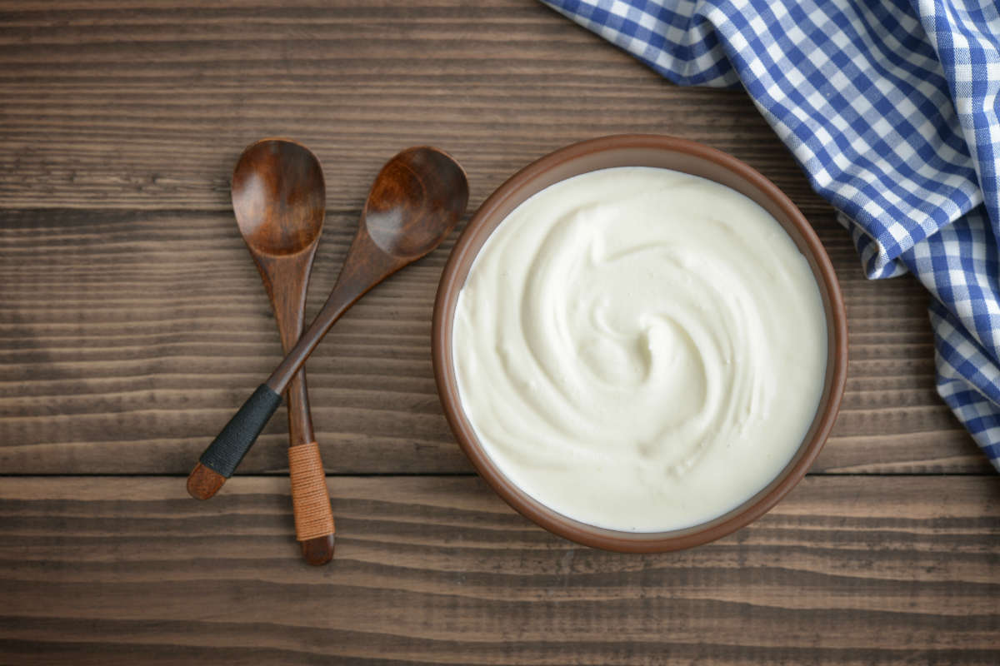

Home-made Skyr

Skyr is a traditional icelandic dairy product, similar to yougurt, that was enjoyed by vikings.
It is high in protein and can be enjoyed with a variety of toppings
Ingredients
- 1 gallon (3.8 liters) whole milk (preferably non-homogenized for authenticity)
- 1 cup (240 ml) buttermilk or 2-3 tablespoons of live Skyr as a starter culture
- 1/2 tbsp liquid animal rennet (optional)
- 1/4 cup lukewarm water (if using rennet)
- Cheesecloth or fine muslin
Equipment
- Large pot
- Thermomether
- Whisk
- Strainer
- Bowls
- ladle
Steps
- Heat the Milk:
- Pour the whole milk into a large pot and heat it gently to 185°F (85°C) while stirring occasionally to prevent scorching.
- Once it reaches the temperature, remove the pot from the heat and let it cool down to 104°F (40°C).
- Add Starter Culture:
- Add the buttermilk or live Skyr to the cooled milk. If you're using a starter culture in powder form, follow the package instructions.
- Stir thoroughly to ensure the starter culture is evenly distributed.
- Add Rennet (Optional):
- If using rennet for a firmer texture, dissolve the rennet in 1/4 cup of water and add it to the milk mixture. Stir gently for a few seconds to mix.
- Incubation:
- Cover the pot and keep it in a warm place to incubate. The ideal temperature for incubation is around 104°F (40°C).
- Allow the mixture to sit undisturbed for 5-12 hours, or until it thickens to a yogurt-like consistency. The time may vary depending on the ambient temperature and the strength of your starter culture.
- Strain the Skyr:
- Once the Skyr has thickened, line a strainer with cheesecloth or muslin and place it over a bowl.
- Ladle the thickened Skyr into the strainer. Let it drain for several hours, or until it reaches your desired thickness. For a thicker Skyr, you can let it drain overnight in the refrigerator.
- Store the Skyr:
- Transfer the strained Skyr to a container and refrigerate.It will keep for about a week.
- You can use the whey (liquid that drains off) in smoothies, baking, or as a substitute for buttermilk.
Serving
- Just scoop the Skyr into bowls and enjoy it plain or with your favorite toppings